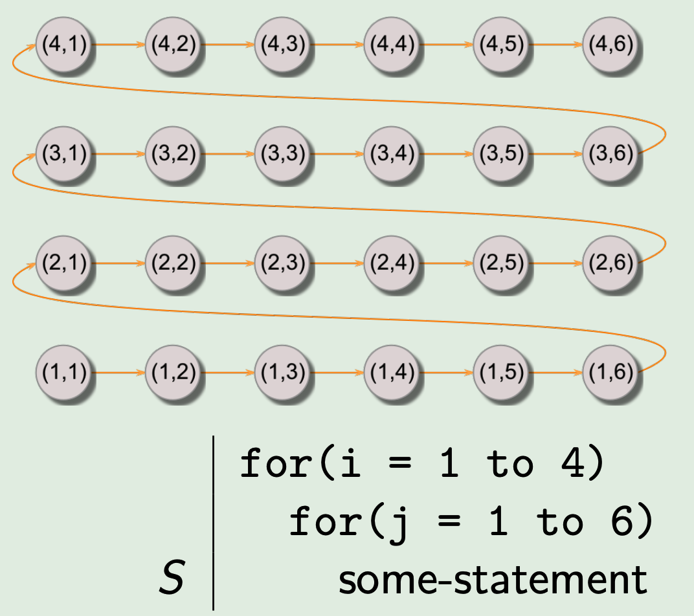
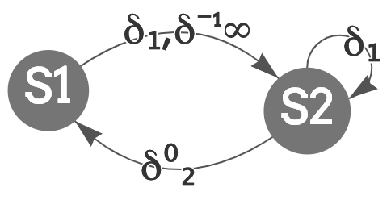

S1 a = ..
S2 .. = a
Denoted S2 δ S1
S1 .. = a
S2 a = ..
Denoted S2 δ-1 S1
S1 a = ..
S2 a = ..
Denoted S2 δ0 S1
Iteration vector I of iteration is the vector of integers containing numbers for loops in order of nesting level.

Our iteration space is the set of all iteration vectors in order of execution given a loop or a nested loop, where the nodes are the iteration vectors and the directed edges showcase dependence of an interation on another. If there is an edge from an iteration I to an interation J, that means that there is a statement in iteration J that depends on a statement in iteration I. There is also a distance between the iterations on the edge, which might be helpful to know in order to concretize the dependence and find a direction of the dependence in our loop.If dependence distances all same, then say loop has that dependence distance. But, loop may have many different dependence distances.
Direction vector summarises directions. If first non = element is < then indicates flow dependence.
For example, given distances:
Direction is:
You can also check the Compiler Optimization course slides on the Iteration Space topic here.
Rather than looking at the problem in terms of iterations, we can consider statements individually: on what other statements they depend and specify the type and the level of loop carried dependence. We can visualize the dependence in this delta graph regardless of the number of loop levels as we are not limited at 2. Here the nodes are the statements and the edges are the delta-notation of the dependencies.
Level of loop carried dependence
Level of loop carried dependence is the index of the left-most non = in direction vector. Written as subscript, e.g.
Consider the following example:
Loop-carried:
Loop-independent:
The resulting dependence graph is this:
You can also check the Compiler Optimization course slides on the Dependence Graph topic here.